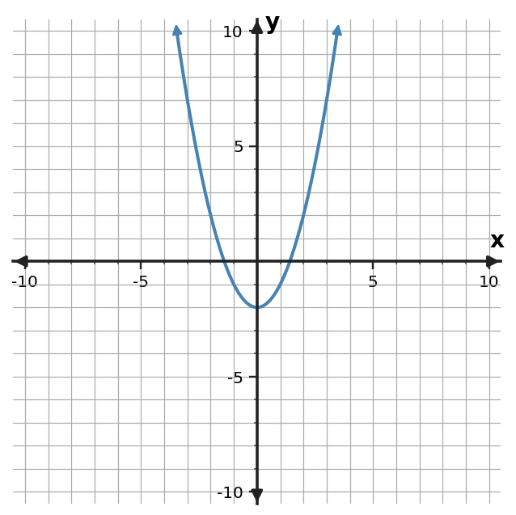

1. Find the constant that completes the square: $x^2-12x+\square$. Then factor the trinomial.
2. Find the constant that completes the square: $x^2-14x+\square$. Then factor the trinomial.
3. Find the constant that completes the square: $x^2+18x+\square$. Then factor the trinomial.
4. Find the constant that completes the square: $x^2+20x+\square$. Then factor the trinomial.
5. Solve $x^2-10x=24$ by completing the square.
6. Solve $x^2-12x=28$ by completing the square.
7. Solve $x^2+14x=32$ by completing the square.
8. Solve $x^2+16x=36$ by completing the square.
9. Rewrite $y=x^2-6x-3$ in vertex form and identify the vertex.
10. Rewrite $y=x^2-8x+3$ in vertex form and identify the vertex.
11. Rewrite $y=x^2-10x+11$ in vertex form and identify the vertex.
12. Rewrite $y=x^2-12x+21$ in vertex form and identify the vertex.
13. Use the graph to identify the vertex and axis of symmetry.

14. Use the table to identify the axis of symmetry and vertex.
| $x$ | $y$ |
|---|---|
| $1$ | $3$ |
| $2$ | $0$ |
| $3$ | $-1$ |
| $4$ | $0$ |
| $5$ | $3$ |
15. A profit model is $P(x)=-(x-8)^2+45$. State the maximizing input and maximum profit predicted by the model.
16. A student changes $x^2+12x=28$ to $(x+6)^2=28$. Identify what was omitted and correct the equation before solving.
17. Rewrite $x^2-10x+19$ in vertex form.
18. For $f(x)=-3(x-3)^2-7$, name the feature visible immediately and state it.
19. A quadratic is available in standard, vertex, and factored form. Which form exposes its zeros most directly, and why?
20. If you need the maximum or minimum of a quadratic, which form gives the key feature with the least additional work? Why?
21. Describe the translation from $y=x^2$ to $y=(x-5)^2+4$.
22. Write an equation for $y=x^2$ shifted right 4 and up 3.
23. The parent point $(3,4)$ is shifted left 3 and up 4. Give the new point.
24. Explain why $y=(x-6)^2$ shifts the graph right rather than left.